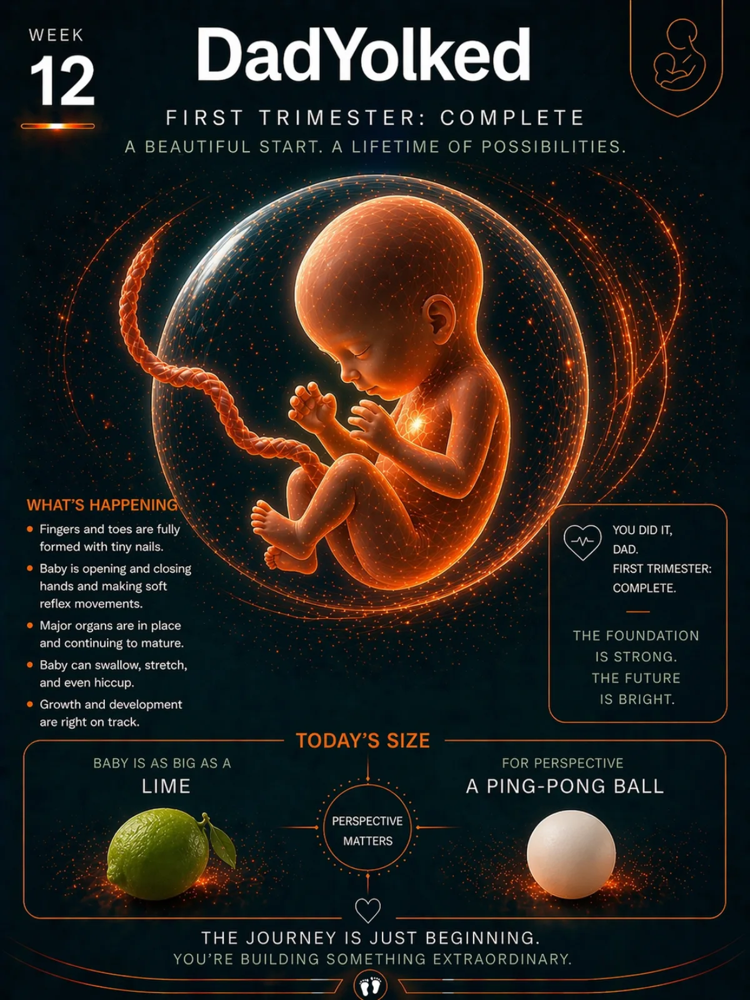

The Today screen, but for dads.
One adaptive surface for the phase you are in: Dad Readiness during pregnancy, Dad Recovery after birth, and the next best action when the day gets messy.
One private app for the whole run: prep for birth, track feeds and diapers at 3 a.m., watch your own recovery, and find any answer fast — without an account, ads, or your data leaving the phone.
DadYolked isn't another tracker you feed data into and never hear back from. It tells you what to do next — for the pregnancy, the baby, and you.
One adaptive surface for the phase you are in: Dad Readiness during pregnancy, Dad Recovery after birth, and the next best action when the day gets messy.
One-handed feeds, sleep, diapers, medicine, pumping/bottle details, and sleep locations. Big buttons. Fast saves. Fewer midnight guesses. Feeding tracker guide → · Feeding schedule guide → · Starting solids checklist → · Sleep tracker guide → · Diaper tracker guide → · Medicine tracker guide → · Schedule guide → · Pediatrician report guide → · Siri/widgets guide →
Week-by-week context, birth prep, kick counter, contraction timer, hospital bag, appointments, and reminders in one stream. See the dad pregnancy app guide → · Kick counter guide → · Contraction timing guide →
Private Apple Health sleep and step context turns into simple guidance: bank rest before birth, spot burnout risk after birth, and plan the next shift.
Universal Search finds logs, sleep locations, appointments, milestones, journals, and saved details. AI Coach keeps answers grounded in the family context you choose.
Apple Watch, Siri/App Intents, widgets, Dynamic Island, and Live Activities keep quick actions close without digging through the app. See the Apple Watch baby tracker guide →
Ask grounded questions about the active child — with stage-safe answers, named log context, and review-first memory. Private notes stay private; off-topic questions stay out of the care digest.
Invite a caregiver through Apple’s share flow. See Pending, Accepted, and Revoked clearly. Offline care logs retry automatically — dad journal and mood never join the share queue.
This update is about the 3 a.m. experience: less to read, fewer taps, and a clearer picture of who's doing what.
Overnight, Today shows current state and the next useful action only. Post-birth one-thumb logging stays available when you need it.
One-tap care logs get a five-second Undo window. Active feed and sleep timers can keep the screen awake so you don’t dig for the lock button.
Notifications, widgets, and Assistant ground on the active child. Wrong-stage questions get a calm redirect before model answers run.
Pending acceptance, Accepted, Revoked, Last synced, and Offline pending — with a clear line that private journal never leaves on the care queue.
Most baby apps treat dad like an optional accessory. DadYolked assumes you're the one holding the baby at 3 a.m., because some nights you are.

Walk into the delivery room knowing where the carseat is, what a contraction is supposed to feel like, and where you stashed the snacks.
Fast logs, sleep windows, feeding sides, diaper trends. The 3 a.m. screen that doesn't make you cry harder.
Milestones, medicine, appointments, photos. The hand-off package the pediatrician actually wants to see.
Tap-friendly. One-handed. Built around the next thing you have to do — not a wall of charts you'll never open.
A practical dashboard for feeds, naps, diapers, meds, appointments, dad recovery, and pregnancy prep. It changes with the profile instead of making you manage tabs.
Expecting mode keeps birth prep, kicks, contractions, and week-by-week context in front. Post-birth mode shifts to quick logs, recovery, routines, and pediatrician-ready history.
Captured from the current iPhone build with demo family data.


Four practical starting points, depending on what tonight looks like.
Birth prep, kick counts, contractions, appointments, and the hospital bag.
Feeds, diapers, sleep, medicine, schedules, and quick calculators.
Night shifts, caregiver notes, emergency contacts, and pediatrician handoffs.
A private check-in for sleep, energy, mood, support, and the next conversation.
"You don't need another app telling you to enjoy every moment. You need to know when the last feed was. That's what this does."
Local-first storage, explicit CloudKit sharing, protected Assistant history, controlled exports, plain-language privacy, and direct support. The site exists so families can understand exactly what the app does before they install it.
Your logs live on your phone by default. Export and Apple shared-care sync are explicit choices.
No ad SDKs, no data brokers, no family-profile resale, and no third-party tracking for advertising.
Caregiver access comes from accepting Apple’s CKShare invitation—not from a URL, code, label, or SMS.
Export supported data as JSON or CSV for visits, backup, or moving off the app. Assistant history can be included in the JSON backup.
The basics, without the sales pitch.
DadYolked covers pregnancy prep, kick counts, contractions, feeds, diapers, sleep, medicine, appointments, milestones, and dad recovery in one iPhone app.
No. Core tracking works without creating an account, and family records stay on the device by default.
Yes. DadYolked supports Apple Watch quick logs, Siri shortcuts, widgets, Live Activities, and other Apple surfaces for faster one-handed tracking.
No. DadYolked helps families organize information and prepare questions, but it does not diagnose conditions or replace guidance from a qualified healthcare professional.
Download DadYolked for iPhone or use this website to understand the app, privacy, support, and App Store links. Free to start, no account required, built for dads doing the work.